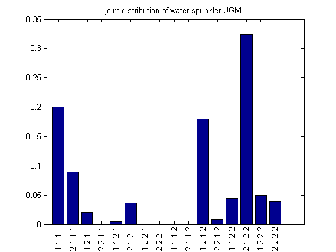

Contents
% Water sprinkler network % Make DAG % C % / \ % v v % S R % \/ % v % W C = 1; S = 2; R = 3; W = 4; G = zeros(4,4); G(C,[S R]) = 1; G(S,W)=1; G(R,W)=1;
Make CPDs
Specify the conditional probability tables as cell arrays The left-most index toggles fastest, so entries are stored in this order: (1,1,1), (2,1,1), (1,2,1), (2,2,1), etc.
CPD{C} = tabularFactorCreate(reshape([0.5 0.5], 2, 1), [C]);
CPD{R} = tabularFactorCreate(reshape([0.8 0.2 0.2 0.8], 2, 2), [C R]);
CPD{S} = tabularFactorCreate(reshape([0.5 0.9 0.5 0.1], 2, 2), [C S]);
CPD{W} = tabularFactorCreate(reshape([1 0.1 0.1 0.01 0 0.9 0.9 0.99], 2, 2, 2), [S R W]);
jointF = tabularFactorMultiply(CPD);
jointDGM = jointF.T;
Convert from DGM to UGM
fac{1} = tabularFactorCreate(ones(2, 2, 2), [C S R]);
fac{1} = tabularFactorMultiply(fac{1}, CPD{1}, CPD{2}, CPD{3});
fac{2} = CPD{4};
jointF = tabularFactorMultiply(fac)
joint = jointF.T;
assert(approxeq(joint, jointDGM))
jointF =
T: [4-D double]
domain: [1 2 3 4]
sizes: [2 2 2 2]
Display joint
lab=cellfun(@(x) {sprintf('%d ',x)}, num2cell(ind2subv([2 2 2 2],1:16),2));
figure;
%bar(joint.T(:))
bar(joint(:))
set(gca,'xtick',1:16);
xticklabelRot(lab, 90, 10, 0.01)
title('joint distribution of water sprinkler UGM')
 Inference
false = 1;
true = 2;
mW = tabularFactorMarginalize(jointF, W);
assert(approxeq(mW.T(true), 0.6471))
mSW = tabularFactorMarginalize(jointF, [S, W]);
assert(approxeq(mSW.T(true,true), 0.2781))
mSgivenW = tabularFactorConditional(jointF, S, W, true);
assert(approxeq(mSgivenW.T(true), 0.4298));
mSgivenWR = tabularFactorConditional(jointF, S, [W R], [true,true]);
assert(approxeq(mSgivenWR.T(true), 0.1945)); % explaining away